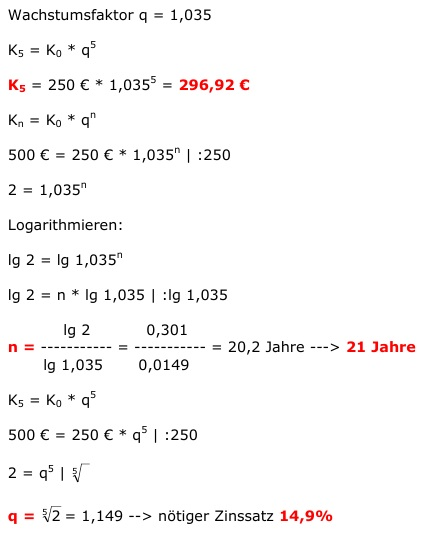

Aufgabe 199 Auf einem Sparbuch sind 250 € zu einem Zinssatz von 3,5 % angelegt. Wie viel € sind nach 5 Jahren angespart? Nach wie viel Jahren sind 500 € angespart? Mit welchem Zinssatz q wären nach 5 Jahren 500 € angespart? 